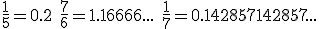
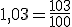

FRACCIONES Y DECIMALES
Fracciones y números decimales
Para pasar una fracción a número decimal, sólo hay que dividir:

Para calcular la fracción generatriz de un decimal exacto, quitamos la coma y ponemos en el denominador un 1 seguido de tantos ceros como decimales había:

Ejercicios:
1.- Encuentra el valor decimal de estas fracciones:
a) 10/7
b) 5/8
c) 7/3
2.- Encuentra la fracción generatriz de estos números decimales:
a) 1.2345
b) 12.11
c) 37.3
Soluciones: 1.- a) 1.428571428571...; b) 0.625; c) 2.333...; 2.- a) 12345/10000; b) 1211/100; c) 373/10
Obra publicada con Licencia Creative Commons Reconocimiento No comercial Compartir igual 3.0